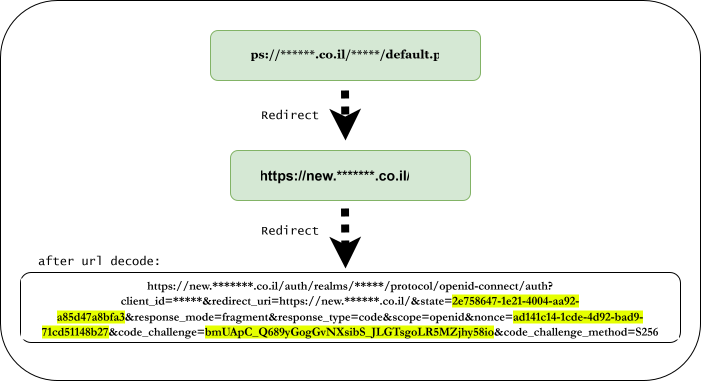
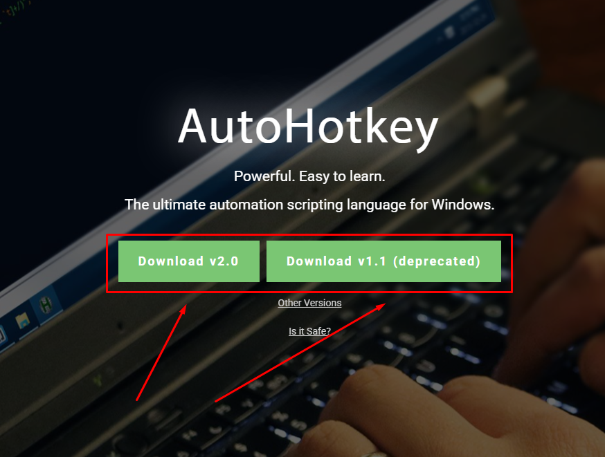
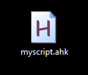
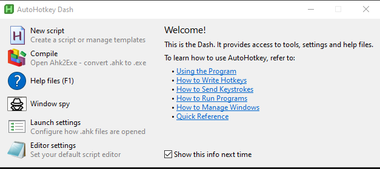
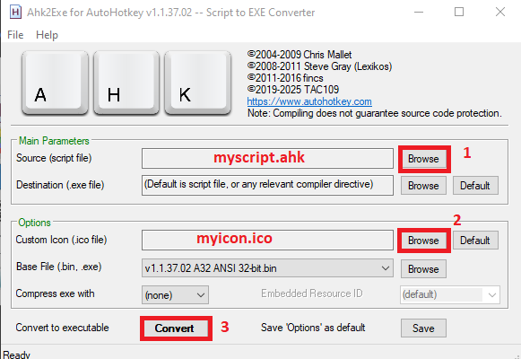
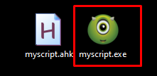
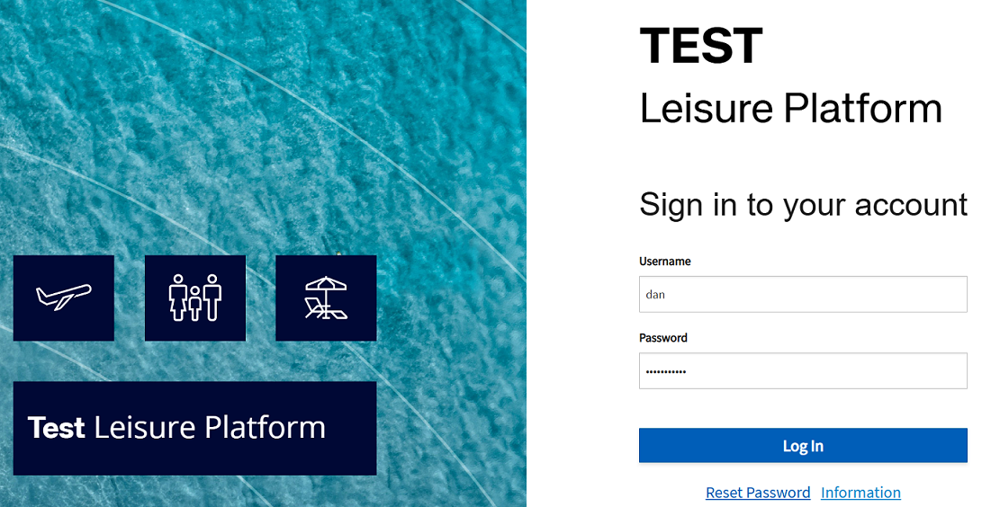

For complex sites with redirects to another site, where each user has a unique token in the GET request metadata, making it impossible to store credentials in the browser cache since the page is different each time.

Download AutoHotkey
- we need to download it from the website. https://www.autohotkey.com (download all versions.)

Simple Script
create simple script for autoconnect for website
- Open new text document and copy & past
danandpaswordreplace it with yours and save it likemyscript.ahk
Run, "C:\Program Files (x86)\Microsoft\Edge\Application\msedge.exe" "https://*****.co.il/*****/default.php"
Sleep, 5000 ; We will wait 5 sec for the site to load (you can increase the time if necessary)
; Automatic input
Send, dan ; Enter your username
Send, {Tab} ; Switching to the password entry field
Send, Mypassword ; Enter your password
Send, {Enter} ; Press Enter to enter
- Save it like
myscript.ahkor your custom name
Convert file.ahk to file.exe
Now we want to run it where there is no AutoHotKey program. so we need to turn it into an .exe file.
-
Open
AutoHotKey Dash>Compile
-
Take your script
script.ahk, then find an icon from the internet or create one from a PNG file, and assign it to your script.
-
This should look like this :

-
Done
